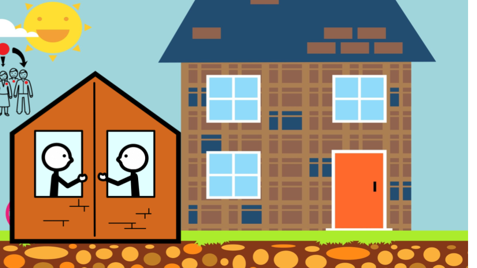
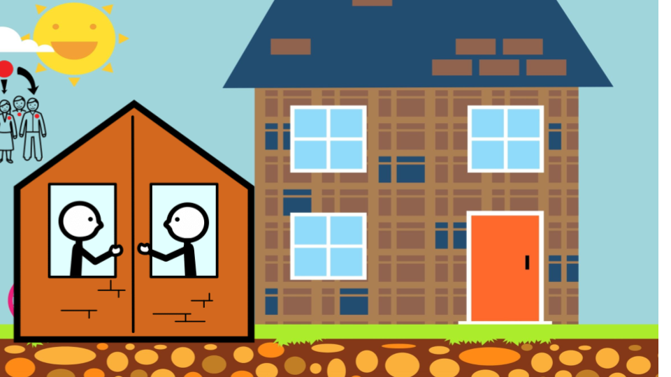
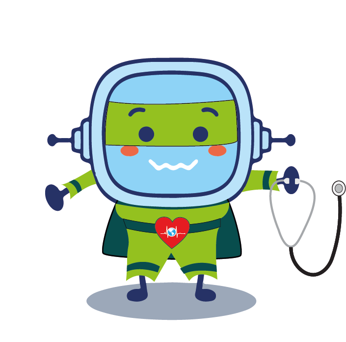
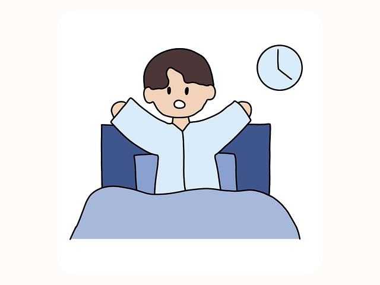
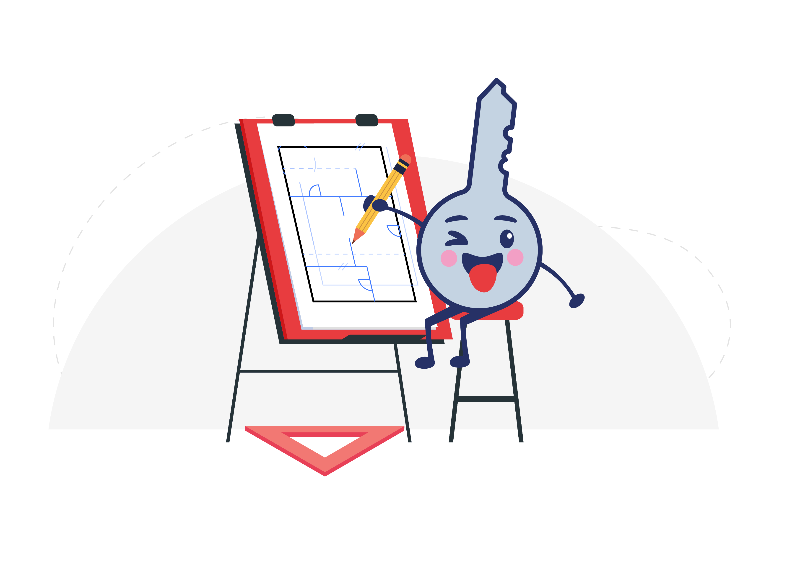

Diccionario
Vecindario
Definición: Conjunto de los vecinos de un mismo edificio, barrio o municipio.
Ejemplo: Buscamos a mi gato por todo el vecindario.
Definición: Conjunto de los vecinos de un mismo edificio, barrio o municipio.
Ejemplo: Buscamos a mi gato por todo el vecindario.
Para poder diseñar vuestro panel/web será importante que conozcáis dónde las podéis llevar a cabo y qué tipo de actividades se pueden hacer.
¿Serás capaz de poner en forma al vecindario?
Definición: Conjunto de los vecinos de un mismo edificio, barrio o municipio.
Ejemplo: Buscamos a mi gato por todo el vecindario.
Para realizar los circuitos de actividades deportivas es importante:
Definición: Conjunto de los vecinos de un mismo edificio, barrio o municipio.
Ejemplo: Buscamos a mi gato por todo el vecindario.
Vamos a hacer una visita a un recinto deportivo cercano al colegio y dar un paseo por la zona para buscar áreas dónde se pueda practicar deporte.
Pero debéis estar muy pendientes, ya que vamos a recabar un montón de información que nos será muy útil para poder poner en práctica nuestros futuros circuitos deportivos.
La persona encargada de la coordinación del grupo, será la que realice el reparto de tareas de las que cada cual va a ser responsable en nuestra salida. Una vez que hayamos vuelto al colegio, rellenaremos en equipo nuestras fichas con todos los datos obtenidos. Debéis apuntar:
Puedes acceder a la ficha de toma de datos del Centro Deportivo
Ahora, en parejas dentro del equipo, debéis resolver un rompecabezas basado en el teorema matemático “Mapa de los cuatro colores”.
El teorema de los cuatro colores consiste en que cualquier mapa puede ser coloreado solamente con cuatro colores distintos de tal manera que dos regiones adyacentes (es decir, que tienen una frontera en común y no sólo un punto) no tengan el mismo color.
Instrucciones:
Coloread este mapa, de modo que no haya dos regiones adyacentes con el mismo color. Sólo puedes utilizar cuatro colores: azul, verde, rojo y púrpura.
Haz clic en las regiones (cuadrilateros) para colorearlas. Para cambiar el color, haz clic de nuevo en la misma región.
Vamos a hacer una visita a un centro deportivo
Para buscar áreas donde hacer deporte
Por ello debes estar muy pendiente, porque:
Vas a buscar información útil
Vas a poner en práctica nuestro proyecto
La persona encargada de grupo, repartirá las tareas.
Una vez volvamos al colegio, rellenaremos los datos obtenidos.
Debéis apuntar:
Seguro que sí. ¡Fantástico !

Vamos a experimentar cómo aumenta nuestro pulso realizando diferentes actividades físicas. Para ello, lo primero que vamos a hacer es tomar nuestro pulso en calma y anotarlo en la ficha adjunta.
Para medir nuestro pulso en calma necesitamos colocar nuestro dedo índice y corazón de la mano derecha en el cuello, justo debajo del mentón. Debemos sentir nuestro pulso en los dedos. Una vez que lo sintamos, un miembro del grupo va a cronometrar 10 segundos de tiempo y cada cual contará los latidos que tenga.
Para terminar, debemos multiplicar por 6 la cantidad obtenida y el resultado es nuestro pulso en un minuto.
Una vez que sabemos nuestro pulso en calma, vamos a experimentar cómo varía a realizar ejercicio físico.
Puedes descargar la ficha para organizar y anotar los datos del pulso y rellenarla.
Buscaremos al menos 5 ejercicios para cada grupo de actividades de los que puede estar compuesto un circuito deportivo y las anotamos en la ficha adjunta.
Tendremos en cuenta que el fin de la actividad es conocer la intensidad de las actividades, por ello, no podemos olvidar medir y anotar nuestro pulso al terminar cada una y recuperarnos antes de comenzar la siguiente.
Bajaremos al patio e iremos realizando los ejercicios que habéis propuesto y anotando nuestro pulso o frecuencia cardíaca al terminar cada uno.
Marcaremos la intensidad de la actividad con el siguiente código de colores: rojo (alta intensidad), amarillo (media intensidad) o verde (baja intensidad).
Vamos a comprobar como cambia nuestro pulso
haciendo diferentes actividades.
Vamos a anotar nuestro pulso en calma en la ficha.
Para ello:
¡Ahora experimentaremos cómo varia al hacer ejercicio!
Ya conoces qué reto te proponemos alcanzar y te acabamos de plantear una actividad que te acercará a la meta. Pero para tener éxito en tu camino, necesitarás algunas estrategias que te servirán para esta y otras tareas parecidas. Las irás descubriendo en un diario que llamamos tu Diario de Aprendizaje.
En esta ocasión te proponemos que lo abras y completes el PASO 1 del Diario de aprendizaje antes de empezar la actividad que acabas de leer!
Haz clic aquí para descargar tu Diario de Aprendizaje. Enlace Descarga.
Recuerda:
¡Ánimo, que lo harás genial!
Paso 1: Pienso lo que tengo qué hacer. -Acceder al paso 1-
¡Ya has empezado la actividad ”la salud nos importa” Los comienzos pueden crearte miedos e inseguridades a la hora de realizarla.
Si completas el PASO 2 del Diario de aprendizaje (¿Seré capaz de hacerlo?) podrás ver que tus sentimientos son habituales cuando empezamos una tarea y reflexionar sobre ello te ayudará a continuar con la actividad y completarla con éxito.
Recuerda:
• Pregunta a tu profesor o profesora si la rellenarás en papel o en el ordenador.
• Si la rellenas en el ordenador, ¡no te olvides de guardarla en tu equipo cuando la termines!
¡Ánimo, que lo harás genial!
Paso 2: ¿Seré capaz de haerlo?. -Acceder al paso 2-

A continuación os presento algunos ejercicios. Elige los que mejor sepas hacer. Son actividades sobre unidades tiempo y te servirán para conseguir construir vuestros panel/web con vuestras propuestas de circuitos de ejercicios físicos.
¡Demuestra que estás preparado para pasar a la siguiente fase!


Escribe en tu cuaderno la duración de estas tareas o actividades.
Comprueba y explica cada una de las respuestas.
Escribe en tu cuaderno una actividad o más que realizas en cada uno de los tiempos que se muestran, puedes aproximar :
Explica como sabes la duración de cada una de las actividades.

Diseña en tu cuaderno un horario semanal de actividades para las tardes. Puede ser real o imaginario .
Haz un cuadro, en él debe aparecer la hora de inicio y fin de la actividad, así como, el tiempo que empleas en cada una de ellas.
Comprueba que están todos los tiempos bien calculados. Después explicarás el horario a tus compañeros.
Obra publicada con Licencia Creative Commons Reconocimiento No comercial Compartir igual 4.0
{kind=link}